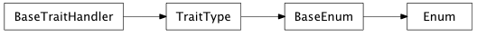
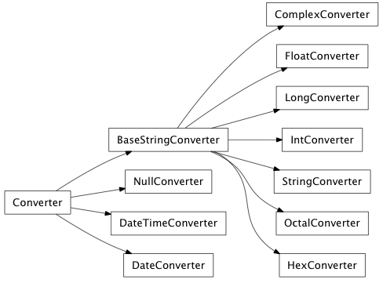
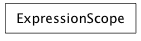
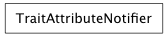
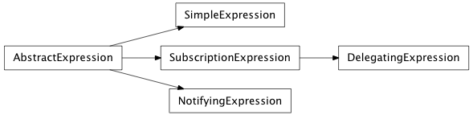
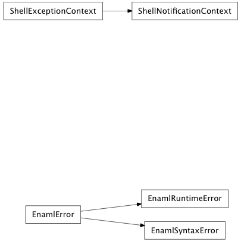

The core implementation provides all the necessary machinery to create a thin layer over backend widgets and produce the traits View objects.

A dialog’s result (depending on how it was closed)
| value | description |
|---|---|
| accepted | The user accepted the dialog. |
| rejected | (default) The user declined the default result. |
Generic orientation values.
| value | description |
|---|---|
| horizontal | Horizontal orientation |
| vertical | Vertical orientation |
The position of the tabs in a Tabbed container.
| value | description |
|---|---|
| top | (default) Place tabs above the main content. |
| bottom | Place tabs below the main content. |
| left | Place tabs to the left of the main content. |
| right | Place tabs to the right of the main content. |
Horizontal alingment.
| value | description |
|---|---|
| left | (default) Align left |
| right | Align right |
| center | Align center |
A container’s layout style, based on the order of insertion.
| value | description |
|---|---|
| left_to_right | (default) Position children from left to right. |
| right_to_left | Position children from right to left. |
| top_to_bottom | Position children from top to bottom. |
| bottom_to_top | Position children from bottom to top. |
A window’s modality specifies whether it captures focus.
| value | description |
|---|---|
| non_modal | (default) The window is not modal. |
| window_modal | The window blocks input to its parent, and all ancestor windows. |
| application_modal | The window blocks input to all other windows in the application. |
The position of ticks for a control.
| value | description |
|---|---|
| not_ticks | (default) Do not display ticks. |
| left | Display ticks to the left of the element. |
| right | Display ticks to the right of the element. |
| top | Display ticks above the element. |
| bottom | Display ticks below the element. |
| both | Display ticks both above the element and below it, or to both the left and the right. This might vary with Orientation. |
The ordering of a sort.
| value | description |
|---|---|
| ascending | Elements will be in ascending order. |
| descending | Elements will be in descending order. |
The result of a validation function.
| value | description |
|---|---|
| invalid | The input was clearly invalid. |
| indermediate | The input is invalid, but further input could make it valid. |
| acceptable | The input is valid. |
The strength of widget expand and clip preferences for hug and resist_clip.
| value | description |
|---|---|
| ignore | No constraint shuld be created. |
| weak | The constraint should be created, but is weak. |
| strong | The constraint should be created, but is strong. |
| required | The constraint should be created, and is required. |
The selection mode for item views.
| value | description |
|---|---|
| extended | Same as contiguous except that the Cmd key can be used to start multiple non-contiguous selection regions. |
| single | A single item may be selection. |
| contiguous | A contiguous range of items may be selected using the Shift key. |
| multi | Clicking on an item toggles its selection. |
| none | No selection allowed. |
What kind of items may be selected in item views.
| value | description |
|---|---|
| items | Individual items, like table cells. |
| rows | Only whole rows, not individual table cells. |
| columns | Only whole columns, not individual table cells. |
Exactly what actions to do when programmatically setting the selection in item views.
| value | description |
|---|---|
| no_update | Make no selection. |
| clear | Clear the complete selection. |
| select | Select the specified indices. |
| deselect | Deselect the specified indices. |
| toggle | Toggle the selection of the specified indices. |
| current | Update the “current” index. |
| rows | Expand the selection to span rows. |
| columns | Expand the selection to span columns. |
| select_current | Select the given selection and update the “current” index. |
| toggle_current | Toggle the given selection and update the “current” index. |
| clear_select | Clear the whole selection and select the given indices. |

Bases: object
Map values from an Enaml component to userspace models and vice versa.
Converters can be used to translate a values between the userspace models and the Enaml components or toolkit widgets. For example, a Converter can be used to synchronize a Field’s string value with an integer attribute.
Enaml provides several base Converters to be used with components like the Field. Custom converters can be created by subclassing and implementing the to_component() and from_component methods.
Note
To avoid race conditions and hard to track bugs ‘to_component’ and ‘from_component’ should be inverse functions. Thus the following expression should hold:
val == Converter.from_component(Converter.to_component(val))
alias of ABCMeta
Convert a value to be used by the Enaml component. If the value cannot be converted, the method should raise a ValueError.
Convert from the Enaml component to userspace models. If the value cannot be converted, the method should raise a ValueError.
list of weak references to the object (if defined)
Bases: enaml.converters.Converter
A simple pass through converter which does not perform any value modification.
Bases: enaml.converters.Converter
A simple abstract Converter that converts a userspace value to a string.
This is an abstract class that defines only the to_component method. Subclasses need to implement the from_component method in order to have a fully functional Converter. Subclasses derived from this class are suitable for use in Enaml Field components.
Bases: enaml.converters.BaseStringConverter
A simple Converter that converts a userspace value to a string and back.
Note
The class methods are only symmetric when the userspace value is a string. For other types a custom from_component method is needed.
Bases: enaml.converters.BaseStringConverter
Convert an integer value to a string and back.
Bases: enaml.converters.BaseStringConverter
Convert an long integer value to a string and back.
Bases: enaml.converters.BaseStringConverter
Convert a float value to a string and back.
Bases: enaml.converters.BaseStringConverter
Convert a complex value to a string and back.
Bases: enaml.converters.BaseStringConverter
Convert between a string and a base-16 integer.
Bases: enaml.converters.BaseStringConverter
Convert from a widget to a base-8 integer.
Bases: enaml.converters.Converter
Convert between dates and strings.
Bases: enaml.converters.Converter
Convert between datetime objects and strings.



Bases: object
A thin object which manages a trait change notification for a SubscriptionExpression affording easy subscription lifetime management.
Initialize a TraitAttributeNotifier.
| Parameters: |
|
|---|
The change handler for the subscribed trait attribute.
list of weak references to the object (if defined)
Bases: object
A mapping object that implements the scope resolution order for Enaml expressions.
Note
Strong references are kept to all objects passed to the constructor, so care should be taken in managing the lifetime of these scope objects since their use is likely to create reference cycles. It is probably best to create these scope objects on-the-fly as needed.
Initialize an expression locals instance.
| Parameters: |
|
|---|
Lookup an item from the namespace.
Returns the named item from the namespace according to the following precedence rules binding notifiers where appropriate:
| Parameters: | name (string) – The name that should be looked up in the namespace. |
|---|---|
| Returns: | result (object) – The value associated with the name, if found. |
Stores the value into the temp locals dict. This operation will occur whenever a STORE_NAME opcode is encountered such as with the loop variables of a list comprehension, or on Python 2.6 to store the list itself. See the docstring of __delitem__ for more info.
Deletes the value from the temp locals dict. This operation will occur on Python 2.6 during a list comprehension. In that version of Python, the list in a list comp is stored in a mangled local variable which is not a valid Python name. Presumably, this is because the LIST_APPEND opcode on 2.6 consumes the TOS, while on 2.7 it does not.
Bases: enaml.expressions.AbstractExpression
A concrete implementation of AbstractExpression that provides a default attribute value by evaluating the expression.
Evaluates and returns the results of the expression.
Bases: enaml.expressions.AbstractExpression
A dynamically updating concrete expression object. This expression will hookup the necessary notifiers during execution so that the expression can be reevaluation when any of its subcriptions are fired.
Injects code into the code object which will call a binder callback when attributes are accessed.
The callback to be use by notifiers when the component should be updated with the new value of the expression.
Updates the value of the component attribute with the new value of the expression.
Hooks up the necessary notifier for the given object and attribute which, when fired, will update the value of the attribute on the component.
Bases: enaml.expressions.SubscriptionExpression
A SubscriptionExpression subclass that performs two-way binding and restricts the expression to the form “<expr>.attr”.
Create the bytecode expression which performs the setattr part of the delegation. This is implemented by copying the bytecode of the getattr expression, and modifying its tail to convert it into a setting operation.
The notification handler to update the component object.
When this method is called, the delegate expression is evaluated and the results are assigned to the appropriate attribute on the component.
The notification handler to update the delegate object.
When this method is called, the delegate expression is updated with the appropriate value from the component.
We guard against circular notifications, but try to ensure that we end up in a consistent state, ie. when all is said and done, the object and the delegate end up with the same value.
Bases: enaml.expressions.AbstractExpression
A concrete expression object that will evaluate an expression when the attribute on the object changes.
Bases: tuple
A namedtuple which is used to pass arguments to the expression.
Return self as a plain tuple. Used by copy and pickle.
Create new instance of arguments(obj, name, old, new)
Return a nicely formatted representation string
Alias for field number 1
Alias for field number 3
Alias for field number 0
Alias for field number 2
A WeakKeyDictionary which is used to hold the instances of the NotifyingExpression. The keys of the dict are the components to which the expressions are listening and the values are lists of instances. Thus, there is no need to store these instances on a component. The instances are added as they are created.
Evaluates the expression and return the results. A notifying expression does not return results so this method simply returns None. The expression is properly evaluated whenever the object attribute changes.
Evaluates the expression while adding an ‘args’ object to the expression scope.

Bases: exceptions.Exception
A general exception used to indicate an error with Enaml or the Enaml runtime that doesn’t fit the semantics of any other Python standard exception.
list of weak references to the object (if defined)
Bases: enaml.exceptions.EnamlError
Derived from EnamlError and used to indicate an Error in the syntax of a .enaml file.
Bases: enaml.exceptions.EnamlError
An EnamlError that occurs during the execution of an Enaml script that couldn’t be caught at compile time but prevents the runtime from continuing to execute the script.
Context manager to temporarily add a TraitsExceptionHandler
We use a context manager to ensure that the exception handler gets cleared no matter what. Default behaviour is to use the null_handler with exceptions re-raised, which means any exceptions which occur will be passed through.
Bases: object
Context manager to that manages error state of shell objects.
Any exceptions which occur within a with statement using this context will get swallowed and set into the exception trait of the shell object.
list of weak references to the object (if defined)
Bases: enaml.exceptions.ShellExceptionContext
Combination of a ShellExceptionContext and a notification_context
Default behaviour is to use the null_handler with exceptions re-raised, which means any exceptions which occur during traits notification will be caught and set to the shell object’s exception trait.
Bases: dict
The Enaml Toolkit class which facilitates toolkit independent development.
The Toolkit is a dict subclass which is injected between the global and builtin scopes of an executing an Enaml function or expression. The contents of the dictionary may consist of any useful objects that should be automatically in scope for executing Enaml code. Typical content of a toolkit will include component constructors, layout helpers, operators, and useful toolkit abstractions.
A classmethod that returns the currently active toolkit, or the default toolkit if there is not active toolkit context.
A classmethod that returns the default toolkit, creating one if necessary.
A context manager method that pushes this toolkit onto the active toolkit stack.
A context manager method that pops this toolkit from the active toolkit stack.
Returns the abstract toolkit app for this toolkit or raises an ValueError if one is not defined.
list of weak references to the object (if defined)
Bases: object
An abstract base class which defines the api required to implement an Enaml importer.
alias of ABCMeta
Appends this importer into sys.meta_path.
Removes this importer from sys.meta_path.
Returns the ast generated by the enaml parser.
| Parameters: |
|---|
Finds the given Enaml module and returns an importer, or None in if the module is not found.
Loads and returns the Python module for the given enaml path. The created module is added to sys.modules.
Searches for the given Enaml module and returns an instance of this class on success.
Paramters
| Returns: | results (Instance(AbstractEnamlImporter) or None) – If the Enaml module is located an instance of the importer that will perform the rest of the operations is returned. Otherwise, returns None. |
|---|
Reads and returns the enaml source code for the module being imported and the full path to the file from which it was read.
| Returns: | result ((source, filename)) – The source code of the .enaml module as a string, and the full path to the module as a string. |
|---|
list of weak references to the object (if defined)
Bases: enaml.import_hooks.AbstractEnamlImporter
The standard Enaml importer which can import Enaml modules from standard locations on the python path.
Searches for the given Enaml module and returns an instance of this class on success.
Paramters
| Returns: | results (Instance(AbstractEnamlImporter) or None) – If the Enaml module is located an instance of the importer that will perform the rest of the operations is returned. Otherwise, returns None. |
|---|
Initialize an importer object.
| Parameters: | enaml_path (string) – The full path to the .enaml file. |
|---|
Reads and returns the enaml source code for the module being imported and the full path to the file from which it was read.
| Returns: | result ((source, filename)) – The source code of the .enaml module as a string, and the full path to the module as a string. |
|---|